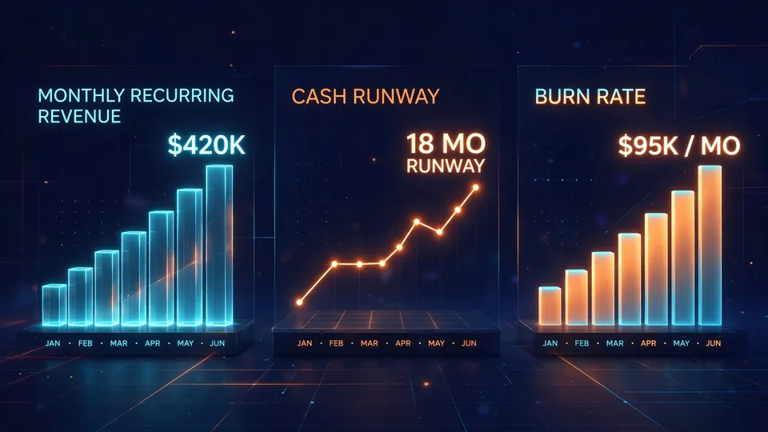

NetSuite launches free AI-first finance platform QuickStart for startups — bank account to first invoice in under 10 minutes
Oracle NetSuite announced the availability of NetSuite QuickStart on Wednesday, a free, AI-first financial platform aimed at early-stage technology startups. The pitch: founders get an AI bookkeeper, a conversational finance assistant, and a direct line into Claude and ChatGPT — and can connect a bank account, issue a first invoice, and start reviewing financials in under 10 minutes.
- Announced Wednesday, October 14, 2026; available free to eligible early-stage technology startups in the United States, subject to NetSuite’s terms of use.
- Teams of AI agents handle routine financial work in the background: accounting, banking, accounts receivable, accounts payable and subscription management — importing, matching, categorizing and reconciling transactions from connected bank and credit card accounts.
- The platform proactively surfaces founder metrics: monthly recurring revenue (MRR), burn rate and runway, plus online payments, report generation and integrations with common startup tools.
- Ask Oracle, a conversational AI assistant, answers questions about the business; through the Model Context Protocol (MCP), founders can engage with their QuickStart financials from inside Claude and ChatGPT.
- Free-tier limits: 2,500 new business records per month, 800 emails, 175 new documents per month, 20 GB of document storage, four connected bank and credit card accounts, and two concurrent integration requests.
What QuickStart does
The core is embedded AI plus what NetSuite calls teams of AI agents that handle routine financial work in the background: accounting, banking, accounts receivable, accounts payable, and subscription management. Connect a bank or credit card account and the platform imports, matches, categorizes, and reconciles transactions on its own, while proactively surfacing the metrics startup founders actually watch — including monthly recurring revenue (MRR), burn rate, and runway — plus online payments, report generation, and integrations with tools common in the startup ecosystem.
The idea is to make NetSuite the first business system a company ever touches rather than the expensive ERP it graduates to years later. For early-stage teams with no finance staff, the alternative has typically been a patchwork of a spreadsheet, an invoicing app, and a bank feed that nobody reconciles.
Ask Oracle — and ask Claude
Baked into the platform is Ask Oracle, a conversational AI assistant founders can query about their business: analyze revenue changes, examine spending patterns, surface insights, and take action on trusted QuickStart data. More unusual is the integration layer: through the Model Context Protocol (MCP), founders can engage with their QuickStart financials from inside the AI tools they already use — explicitly including Claude and ChatGPT.
That is a notable move for an ERP vendor: rather than forcing founders to live inside NetSuite's own interface for every question, the financial system becomes a data source other agents can act on. The practical version of the demo is a founder asking Claude why MRR dipped and getting an answer grounded in the company's own ledger instead of a generic explanation.
Free, with limits
QuickStart is available free to eligible early-stage technology startups in the United States, subject to NetSuite's terms of use. The free tier carries monthly and account limits worth checking before adopting it: 2,500 new business records (including invoices and other transactions), 800 emails, 175 new documents per month, 20 GB of document storage, four connected bank and credit card accounts, and two concurrent integration requests — including MCP requests.
Those caps will comfortably cover a pre-seed or seed-stage company; a startup doing serious transaction volume, juggling many accounts, or hammering the MCP endpoint may outgrow them fast. The release also does not say what graduating to a full NetSuite deployment will cost later — the real bill lands when the free tier no longer fits.

Why it matters
ERP incumbents have historically waited until companies were big enough to afford an implementation. QuickStart flips the funnel: hook founders when the company is two people and a prototype, and the platform is already embedded when finance gets complicated. The MCP integration is the tell — NetSuite is betting that the financial system of record matters most when it is reachable from wherever the founder is already working.
"QuickStart is designed to handle more of the routine financial work, surface what actually needs a founder's judgment, and provide a financial foundation that can grow with the business," said Evan Goldberg, founder and executive vice president of Oracle NetSuite. Early customer Contender AI's founder and CEO James Salanitri said the platform let his small team "quickly establish the financial foundation we needed without a complicated setup process." The open questions are the usual ones for AI finance: whether the automation is reliable enough to trust, how the usage limits hold up under growth, and what the upgrade path costs. Details and eligibility are at netsuite.com/quickstart.